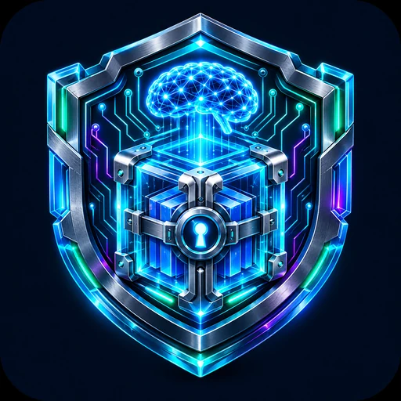

Конструктор СаркофаговОффлайн-инструмент для фиксации контекста проекта, решений, рисков и передачи работы между AI. Руль у пользователя.
🎯 Что это такое?
«Саркофаг» — это структурированный документ, который собирает воедино всё, что нужно знать о проекте: философию, архитектуру, правила, баги, планы. Когда ты передаёшь проект новому AI или возвращаешься к нему через месяц — ты просто скидываешь Саркофаг, и контекст восстанавливается за 30 секунд.
🧠 Зачем это нужно?
- Без хаоса: новый AI сразу понимает, «что такое хорошо» в твоём проекте.
- Без потерь: все решения, баги и договорённости зафиксированы.
- Без повторения ошибок: база багов и фиксов — это прививка от грабель.
- Скорость: 30 секунд на передачу контекста вместо часа объяснений.
🚀 Как начать?
Нажми на кнопку ниже. Конструктор проведёт тебя через 5 этапов (тип проекта → ядро → модули → опции → генерация). На выходе получишь два артефакта: SHORT CAPSULE (краткая суть для быстрой передачи) и FULL SARCOPHAGUS (полный документ для архива).
🛡️ Открыть Конструктор Саркофагов Версия v2.4.0 · Диагност · Автосохранение · Импорт/экспорт JSON